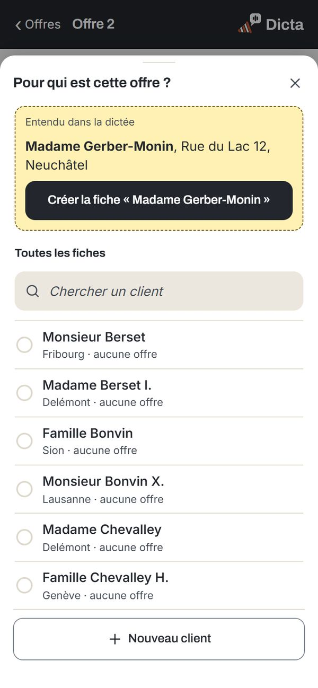
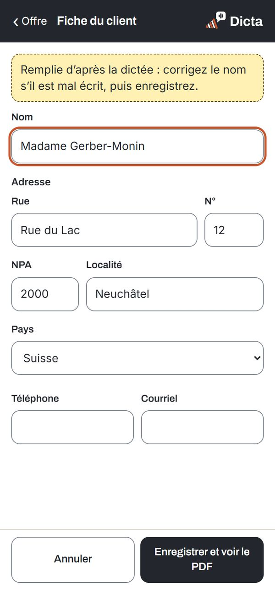
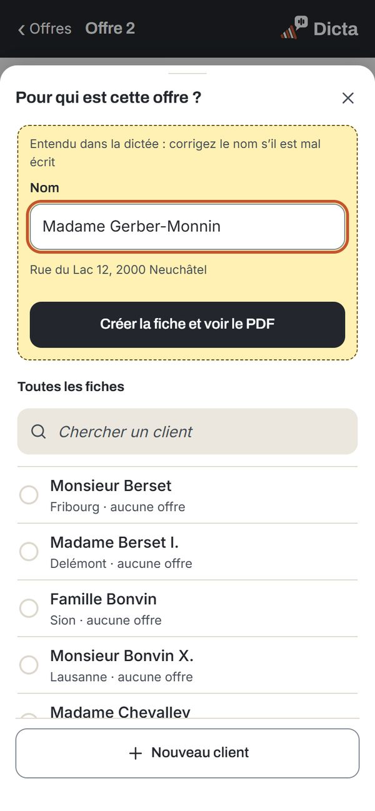
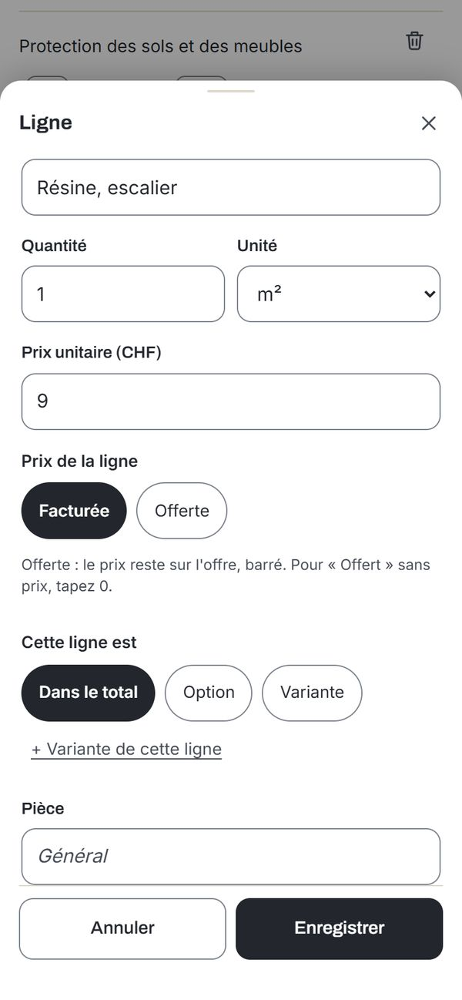
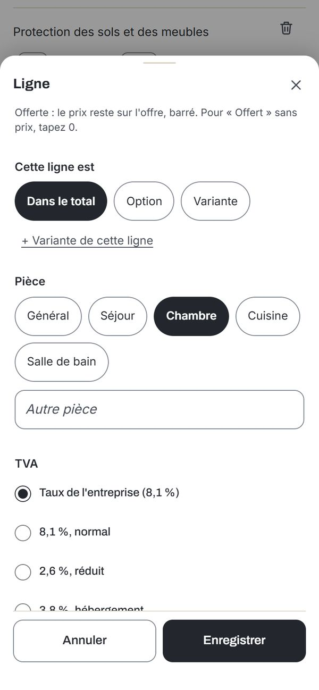
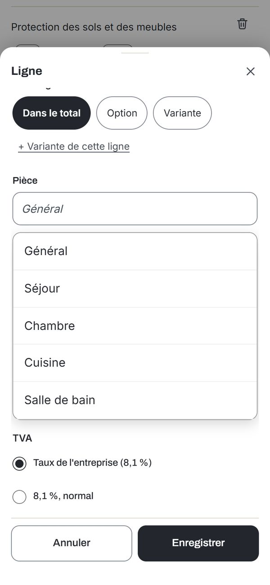
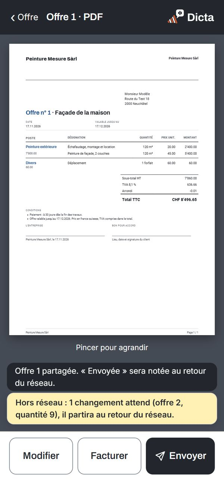
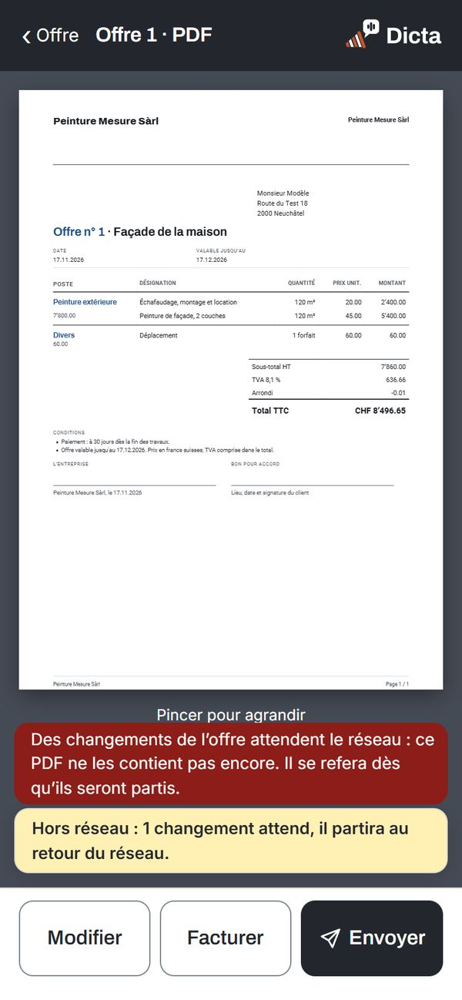
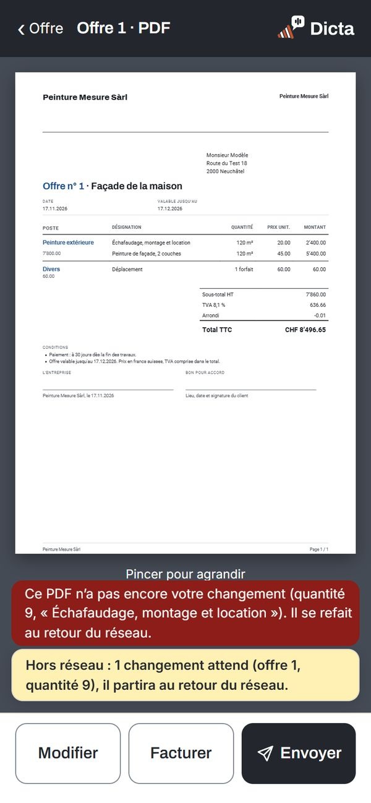
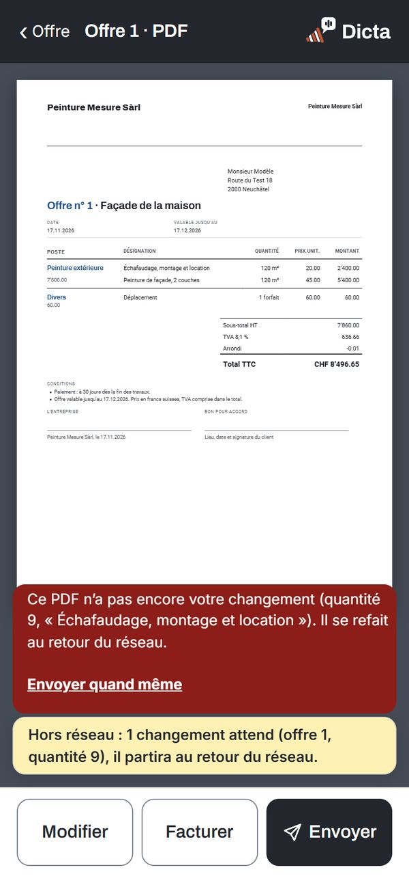

Fluidité, suite de la recette du 24.11 : quatre points
SR-1, MP-A19, MP-A14 et SR-6, relevés le 24 novembre 2026 sur le banc local (copie à jour de chantier-voix-offre, données inventées, Chromium et WebKit, le moteur de Safari). Les captures « proposé » sont l'application réelle, retouchée dans la page : rien n'est encore codé. Tes choix se posent sous chaque écran ; « Copier mes réponses », en bas, les rassemble.
En bref
SR-1 : le geste qui ne répond pas au début de l'offre
Ce que j'ai mesuré. L'offre s'affiche dès que ses premières lignes arrivent. Ses gestes (fluide.js et app.js) ne sont branchés qu'à la fin du téléchargement de la page et de ses scripts. Un toucher dans l'intervalle part comme un formulaire ordinaire : la page entière se recharge, et la corbeille la ramène tout en haut.
Offre de 32 lignes, réseau de chantier simulé (500 ms, 400 kbit/s), Chromium. Rouge : l'offre est à l'écran, un toucher recharge la page. Vert : gestes branchés.
| Réseau | Scripts gardés | Juste après un déploiement |
|---|---|---|
| Fibre | 0,01 à 0,11 s | 0,01 à 0,05 s |
| 4G | 0,01 s | 0,18 s |
| Chantier | 0,11 à 0,18 s | 1,8 à 2,0 s |
Durée de la fenêtre « lignes visibles, gestes muets », trois offres (3, 6 et 32 lignes). Après un déploiement, les scripts changent d'adresse : le téléphone doit les recharger (50 Ko compressés).
| Toucher sur le réseau de chantier | Écran changé | Fini | Page |
|---|---|---|---|
| « C'est juste », dans la fenêtre | 1,85 s | 4,16 s | rechargée |
| « C'est juste », 10 s après | 0,05 s | 0,64 s | sur place |
| Corbeille, dans la fenêtre | 1,85 s | 4,16 s | rechargée |
| Quantité, dans la fenêtre | 1,88 s | 4,16 s | rechargée |
A. Une amorce retient le toucher (conseillé)
Un petit script (moins de 2 Ko) chargé avant l'affichage. Son adresse ne change que s'il change : après un déploiement, le téléphone l'a déjà. Tant que les gestes ne sont pas branchés, il retient le toucher et enfonce le bouton ; dès qu'ils le sont, le geste part comme d'habitude, sans rechargement.
- Plus jamais de page rechargée par un geste trop tôt.
- L'offre s'affiche aussi vite qu'aujourd'hui.
- Juste après un déploiement, sur le chantier, le changement arrive jusqu'à 2 s après le toucher (bouton enfoncé pendant ce temps).
B. Les scripts avant l'affichage
La page attend ses scripts avant de montrer les lignes.
- Chaque geste répond au toucher dès que l'offre paraît.
- Juste après un déploiement, sur le chantier : écran blanc 1,8 à 2 s de plus à l'ouverture de la première page.
C. Laisser ainsi
- Rien à faire.
- Le cas reste : une page rechargée de temps en temps, surtout après un déploiement et sur un réseau faible.
D1. Un toucher arrive avant que les gestes soient branchés
MP-A19 : corriger le nom mal écrit par l'IA
« Générer l'offre » sur une offre sans client : « Créer la fiche » enregistre le nom entendu tel quel et ouvre le PDF. Un nom mal écrit (« Gerber-Monin » pour « Gerber-Monnin ») part sur le PDF ; le corriger demande ensuite d'aller dans « Clients », d'ouvrir la fiche, de la modifier, puis de régénérer.



Ta demande dit « ouvrir la fiche » et « sans clic de plus » : A ouvre la fiche et coûte un toucher de plus à chaque offre, même quand le nom est juste ; B corrige sans toucher de plus, mais seulement le nom (l'adresse se lit, elle se corrige ensuite dans la fiche). Le téléphone et le courriel ne servent pas au PDF.
D2. Corriger le nom entendu avant de créer la fiche
Les fiches qui ressemblent et « Toutes les fiches » restent dessous, inchangées, dans les deux cas.
MP-A14 : les pièces existantes dans la fiche d'une ligne
La fiche d'une ligne a un champ « Pièce » relié à la liste des pièces de l'offre. Cette sorte de liste (« datalist ») ne paraît qu'au clavier, filtrée par ce qui est déjà écrit : une ligne déjà dans le « Séjour » ne propose que « Séjour ». Sur ton iPhone, son affichage n'est pas vérifié.



- A marche sans JavaScript (boutons radio) et se lit sans clavier ; avec dix pièces, les puces prennent trois rangées.
- B garde l'écran court ; il faut un toucher pour voir les pièces, et le clavier s'ouvre en même temps.
- Une offre sans pièce n'a pas ce champ aujourd'hui : inchangé.
D3. Choisir la pièce dans la fiche d'une ligne
SR-6 : « des changements attendent » sans changement
Reproduit. Dans ta recette, SR-5 (juste avant) laisse exprès un changement en attente : quantité changée en mode avion, « Annuler » à la déconnexion. « Envoyer » refuse de partir dès qu'un changement attend, quelle que soit son offre, et dit « Des changements de l'offre attendent le réseau ». Sur une autre offre, c'est faux, et l'artisan ne peut pas envoyer un PDF juste.


Non reproduit avec le réseau revenu : huit passages (Chromium et WebKit, retour par le lien ou par l'historique, réseau rendu sur « Plus » ou sur l'offre). Le changement part, « Envoyer » marche, « Offre 1 envoyée ».
Et quand le changement en attente est sur cette offre-là
Le PDF affiché ne le contient pas encore : l'envoyer enverrait l'ancienne version. Aujourd'hui, « Envoyer » attend le réseau, refait le PDF, puis l'artisan retouche « Envoyer ».



D4. Un changement de cette offre attend le réseau, l'artisan touche « Envoyer »
A : jamais de PDF faux chez le client. B : l'artisan peut envoyer sans réseau, au risque d'un prix ou d'une quantité d'avant.
Ordre et estimation
| Ordre | Point | Estimation |
|---|---|---|
| 1 | SR-6 : « Envoyer » ne regarde que cette offre, bandeau et message qui nomment le changement | 1,5 h |
| 2 | SR-1 : selon D1 | 3 h |
| 3 | MP-A14 : les pièces dans la fiche d'une ligne | 2 h |
| 4 | MP-A19 : le nom entendu, selon D2 | 2 h |
| 5 | Revue, recette par l'interface sur le banc (Chromium et WebKit), déploiement sur le test avec ton accord | 2,5 h |
Environ 11 h. Le déploiement sur le test attend ton accord : tu as demandé ce matin de ne plus y déployer.
D5. Cet ordre
Copier mes réponses
Ce texte se remplit avec tes choix. Copie-le et colle-le dans la conversation.
Copié.